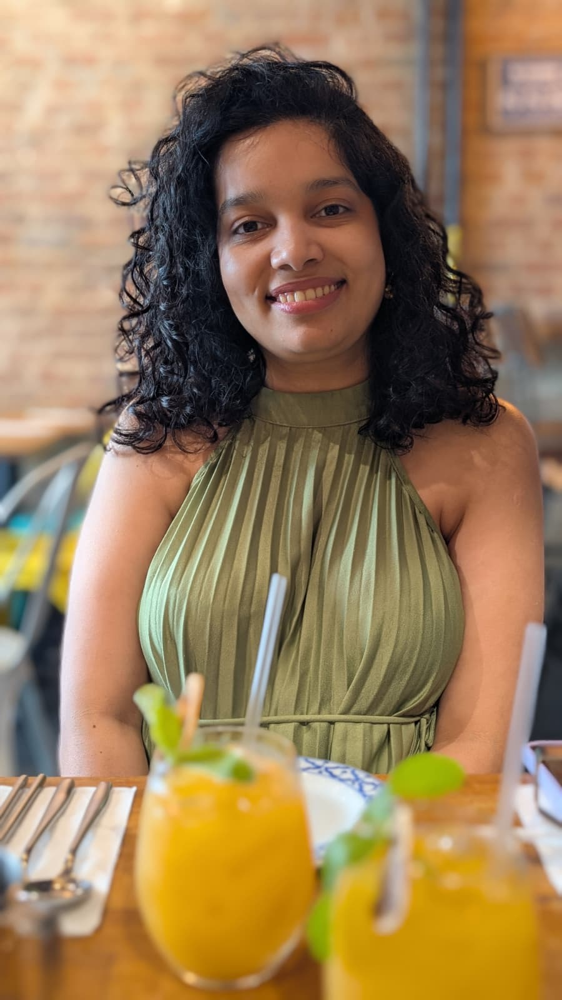

Dentist by training, Columbia Public Health grad, currently learning to believe in pronoia — the quiet suspicion that the universe is conspiring in your favor.

I'm a dentist by training and a Columbia Public Health grad, living in Jersey City with more plants than shelf space. I love animals, green things, and the slow satisfaction of helping something reach beyond its original potential — which is what draws me to product.
I've led cross-functional research projects, translated messy stakeholder needs into scalable solutions, and picked up AI tools along the way. Strong communication, clear execution, calm decision-making — those are my muscles.
Off-hours I'm probably at a coffee shop, getting my nails done, or reading about pronoia — the quiet suspicion that the universe is conspiring in your favor. I'm currently learning to believe in it.
If you're building something in health, life sciences, or an AI-forward team — and you want someone who reads the room before she reads the spec — let's talk.
Leading cross-functional research projects and turning stakeholder input into scalable, user-ready solutions.
Self-driven experiments bringing LLMs and automation into life-sciences knowledge work.
A personal case study on translating clinical decision-making into product thinking, prioritization, and calm judgment.
Small apartment, many plants. Documenting what thrives, what sulks, and what surprises.
Why clinical training quietly makes you a good PM.
Notes on trusting that things are conspiring in your favor.
The unglamorous workflows that keep making my week better.